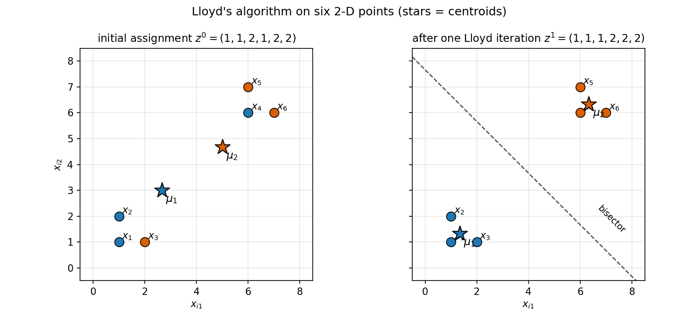

26. K-means clustering
Part IV opens here. §25.12(iv) previewed this part: the modern ML toolbox — k-means, kernels, regularization, trees, SVMs, ensembles — with Part II’s probability machinery underneath. The toolbox opens with the oldest and simplest clustering algorithm there is, and it keeps a promise §25.12(i) made: EM on a GMM clusters softly, handing every point a responsibility vector; the hard-assignment cousin, k-means, is this chapter’s job. Same unsupervised spirit as Chapters 24–25 (§22.11) — a different goal: not compressing the data, not scoring it, but grouping it.
Everything in §§26.1–26.10 comes from the MLT Week 3 lecture notes on k-means (Lloyd’s algorithm) and the Week 3 practice assignment; the hand-worked example in §26.5 follows the lecture’s step order exactly, with every number recomputed independently (review log).
Notation. Data \(D = \{x_1, \ldots, x_n\}\), \(x_i \in \mathbb{R}^d\) (subscript convention, Chapters 24–25). The number of clusters \(K\) is fixed before the algorithm runs — an input, like GMM’s \(K\) (§25.3(iii)). Each point carries a cluster indicator \(z_i \in \{1, \ldots, K\}\): \(z_i = k\) means “\(x_i\) belongs to cluster \(k\)”. Cluster \(k\)’s center is \(\mu_k \in \mathbb{R}^d\), the centroid.
26.1 The clustering task: grouping unlabelled data
Def (clustering). Given unlabelled \(x_1, \ldots, x_n\), partition them into \(K\) groups — clusters — so that points in the same group are similar and points in different groups are dissimilar.
- Unsupervised, §22.11’s third verb. §22.11 says unsupervised learning compresses, explains, and groups. PCA compressed (§24), GMMs explained via probability (§25); k-means groups. No labels, no \(y_i\) — the groups are discovered, not taught.
- The use case (§22.11). §22.11’s marketing manager: a million tweets a week, unreadable — group them into 10 clusters (selfies-with-Coke, co-branding, paid promotions, …), then a human reads the 10 groups. The grouping is the algorithm’s job; giving the groups meaning is the human’s.
- \(K\) is your call. The algorithm does not discover how many clusters exist; you hand it \(K\) up front (§26.8 is about choosing it).
Basically, … “You have a pile of unlabelled points and a number \(K\). Sort the pile into \(K\) heaps so each heap’s points huddle together. Nobody tells you the right heaps — ‘right’ has to be defined by the algorithm itself, which is §26.3’s job.”
26.2 How many partitions? Counting the assignments
Fix \(K\). An assignment is a choice of \(z_1, \ldots, z_n\), each in \(\{1, \ldots, K\}\).
Count. \(n\) points, \(K\) independent choices each (clusters allowed to be empty): \[\boxed{K^n \text{ possible assignments}}\] — the lecture’s count, stated exactly this way.
- Brute force is hopeless. \(K^n\) grows brutally: \(n = 100\), \(K = 3\) gives \(3^{100}\) assignments. Nobody enumerates.
- So we iterate, not enumerate. Lloyd’s algorithm (§26.4) walks through assignments — each step either moves to a strictly better one or stops — instead of checking all \(K^n\).
- Labels are bookkeeping. As with GMM components (§25.4), permuting cluster labels changes nothing — assignments differing only by renaming clusters describe the same partition. The \(K^n\) count ignores this; it is an upper bound on distinct partitions, which is all the convergence argument (§26.4) needs.
eg 1 (counting, tiny). \(n = 3\) points, \(K = 2\): \(2^3 = 8\) assignments — \((1,1,1), (1,1,2), (1,2,1), (1,2,2), (2,1,1), (2,1,2), (2,2,1), (2,2,2)\). Note \((1,1,2)\) and \((2,2,1)\) are the same partition with renamed labels — the double-counting (iii) mentions.
Basically, … “Every point independently picks one of \(K\) buckets: \(K^n\) ways to fill them. For any real dataset that number is astronomical, so the algorithm never lists assignments — it improves its way to a good one instead.”
26.3 The k-means objective: within-cluster sum of squares
Given an assignment, how good is it? The lecture’s answer: add up, over all points, the squared distance from each point to its own cluster’s center.
Def (k-means objective). With \(\mu_{z_i}\) = the center of the cluster assigned to \(x_i\), \[\boxed{F(z_1, \ldots, z_n) = \sum_{i=1}^{n} \|x_i - \mu_{z_i}\|^2}.\] Also called the distortion or the within-cluster sum of squares (WCSS): it measures how scattered each cluster is around its center. Goal: minimize \(F\).
Def (centroid). The center \(\mu_k\) is the mean of the points assigned to cluster \(k\): \[\boxed{\mu_k = \frac{\sum_{i=1}^{n} x_i\,\mathbf{1}(z_i = k)}{\sum_{i=1}^{n} \mathbf{1}(z_i = k)}}\] — the lecture’s formula: the cluster’s points summed, divided by the cluster’s headcount (\(\mathbf{1}(\cdot)\) is the indicator, \(1\) when true, \(0\) when false).
- Why the mean? For a fixed assignment, the mean is what minimizes that cluster’s contribution to \(F\): differentiating \(\sum_{i:z_i=k}\|x_i - \mu\|^2\) w.r.t. \(\mu\) (componentwise, the §20.6 calculation) gives \(-2\sum_{i:z_i=k}(x_i - \mu) = 0\), i.e. \(\mu =\) average. The centroid isn’t an arbitrary “center” — it is the optimal one for the points it serves.
- \(F\) is a loss, §22.11-style. Unsupervised learning has no \(y_i\) to check against, so each task invents its own loss (§22.11(i)): PCA invented reconstruction error (§22.12), density estimation invented negative log-likelihood (§22.13), and clustering invents \(F\).
- \(F \ge 0\) always, and \(F = 0\) means every point sits exactly on its centroid — possible only if each cluster’s points coincide, or (trivially) with \(K = n\) (§26.8).
eg 2 (reading \(F\)). 1-D data \(\{0, 2, 9, 10\}\), \(K = 2\), assignment \(z = (1,1,2,2)\): - cluster 1: \(\{0,2\}\), \(\mu_1 = 1\): contributions \((0-1)^2 + (2-1)^2 = 2\); - cluster 2: \(\{9,10\}\), \(\mu_2 = 9.5\): contributions \(0.25 + 0.25 = 0.5\); \[\boxed{F = 2.5}.\] A worse grouping scores worse — Problem 1 works this out on similar data, where a bad split scores \(\tfrac{146}{3}\) against \(1\) for the good one. That sensitivity is the point: \(F\) scores assignments.
Basically, … “\(F\) is the total ‘unhappiness’: every point measures its squared distance to its cluster’s center, and you add them all up. Good clustering = small \(F\) = every point snuggled close to its own center. And the center is just the average of its points — the one location that minimizes that cluster’s unhappiness.”
26.4 Lloyd’s algorithm: assign, re-mean, repeat
Minimizing \(F\) over \(K^n\) assignments by brute force is out (§26.2). The lecture’s algorithm — Lloyd’s algorithm — alternates two steps, each trivial, each unable to increase \(F\).
Initialization. Pick \(z_1^0, \ldots, z_n^0 \in \{1, \ldots, K\}\) — an initial assignment (§26.7 is about choosing it well).
Until convergence, repeat: - Compute means. For each \(k\), \[\boxed{\forall k,\quad \mu_k^t = \frac{\sum_{i=1}^{n} x_i\,\mathbf{1}(z_i = k)}{\sum_{i=1}^{n} \mathbf{1}(z_i = k)}}\] (the centroid formula, applied to the current assignment). - Reassignment step. For each \(i\), \[\boxed{\forall i,\quad z_i^{t+1} = \arg\min_{k} \|x_i - \mu_k^t\|^2}\] — every point moves to its nearest centroid. (Ties: keep the old label; it changes nothing — a convention, not in the lecture.)
Why each step is safe (neither can increase \(F\)): i) The mean step fixes the assignment and re-centers: by §26.3(i), the mean minimizes each cluster’s squared-deviation sum, so recomputing \(\mu_k\) can only lower (or leave) \(F\). ii) The reassignment step fixes the centers and re-assigns: each point independently picks the \(k\) minimizing its own term \(\|x_i - \mu_k^t\|^2\), so the sum \(F\) can only lower (or leave). Hence, with \(F^t\) = the objective after iteration \(t\): \[\boxed{F^{t+1} \le F^t}\] — the practice assignment’s answer, and the lecture’s “every reassignment reduces the value of the objective function”, stated with exactly the strictness the sources support: strictly smaller whenever at least one point actually changes cluster — a point moves only if it finds a strictly closer center (the lecture’s “unhappy” points).
Why it must stop (the lecture’s convergence argument). In the lecture’s four lines: i) In every iteration, only unhappy points change clusters. ii) Every reassignment that moves a point reduces \(F\). iii) Every reassignment results in a new partition — \(F\) strictly dropped, so this partition cannot be one already visited (the practice solution’s (a)+(c)+(e): partitions never repeat, and a change in \(F\) means the partition changed). iv) There are only finitely many partitions (\(\le K^n\), §26.2) — a strictly decreasing sequence over a finite set must end. The algorithm converges.
What “converges” does NOT mean (practice assignment, Q6/Q9 — stated exactly as sourced): i) No global optimum. Different initializations can land in different local minima of \(F\) — “one initialization might get stuck in local minima, while another may lead to global minima” (Q9(b)). ii) Init affects speed. The number of iterations to converge depends on the start (Q9(d)). iii) It always stops. Q9(c) (“one initialization may converge while another may not”) is false — the finiteness argument holds for every start. iv) \(K^n\) bounds partitions, not iterations — Q6(f) is false: \(K^n\) is only the upper limit on possible partitions, not the iteration count (in practice Lloyd stops far, far earlier).
Note (empty clusters). The \(K^n\) count allows empty clusters, but the centroid formula divides by the cluster’s headcount — a cluster that empties out breaks the formula. The lecture prescribes no fix; in practice, re-seed or drop the empty center. (Flagged in the review log as a point the lecture leaves open.)
Basically, … “Two dance steps, repeated: (1) each cluster’s center moves to its points’ average; (2) each point defects to its nearest center. Neither step can ever make \(F\) worse — so \(F\) ratchets down every round. There are only finitely many assignments, so the ratchet must click to a stop. Where it stops depends on where you started: Lloyd finds a local valley of \(F\), not necessarily the deepest one.”
26.5 Worked: one Lloyd iteration by hand
Six points in 2-D, \(K = 2\) — deliberately bad initial assignment so things move: \[x_1=(1,1),\; x_2=(1,2),\; x_3=(2,1),\; x_4=(6,6),\; x_5=(6,7),\; x_6=(7,6),\] \[z^0 = (1,1,2,1,2,2)\] (points \(1,2,4\) start in cluster 1; \(3,5,6\) in cluster 2).
Step 1 — compute means. Cluster 1: \(\{x_1,x_2,x_4\}\), \(\mu_1^0 = \big(\tfrac{1+1+6}{3}, \tfrac{1+2+6}{3}\big) = \boxed{\big(\tfrac83, 3\big)}\). Cluster 2: \(\{x_3,x_5,x_6\}\), \(\mu_2^0 = \big(\tfrac{2+6+7}{3}, \tfrac{1+7+6}{3}\big) = \boxed{\big(5, \tfrac{14}{3}\big)}\).
Initial objective (each point to its assigned center): - cluster 1: \(\|x_1-\mu_1^0\|^2 = \tfrac{61}{9}\), \(\|x_2-\mu_1^0\|^2 = \tfrac{34}{9}\), \(\|x_4-\mu_1^0\|^2 = \tfrac{181}{9}\) → \(\tfrac{276}{9}\); - cluster 2: \(\|x_3-\mu_2^0\|^2 = \tfrac{202}{9}\), \(\|x_5-\mu_2^0\|^2 = \tfrac{58}{9}\), \(\|x_6-\mu_2^0\|^2 = \tfrac{52}{9}\) → \(\tfrac{312}{9}\); \[\boxed{F^0 = \tfrac{276+312}{9} = \tfrac{196}{3} \approx 65.33}.\]
Step 2 — reassign (squared distances to the two centers; smaller wins):
| point | to \(\mu_1^0\) | to \(\mu_2^0\) | new \(z\) |
|---|---|---|---|
| \(x_1\) | \(\tfrac{61}{9}\approx6.78\) | \(\tfrac{265}{9}\approx29.44\) | 1 |
| \(x_2\) | \(\tfrac{34}{9}\approx3.78\) | \(\tfrac{208}{9}\approx23.11\) | 1 |
| \(x_3\) | \(\tfrac{40}{9}\approx4.44\) | \(\tfrac{202}{9}\approx22.44\) | 1 (was 2) |
| \(x_4\) | \(\tfrac{181}{9}\approx20.11\) | \(\tfrac{25}{9}\approx2.78\) | 2 (was 1) |
| \(x_5\) | \(\tfrac{244}{9}\approx27.11\) | \(\tfrac{58}{9}\approx6.44\) | 2 |
| \(x_6\) | \(\tfrac{250}{9}\approx27.78\) | \(\tfrac{52}{9}\approx5.78\) | 2 |
eg, \(x_3=(2,1)\): to \(\mu_1^0\): \((2-\tfrac83)^2 + (1-3)^2 = \tfrac{4}{9}+4 = \tfrac{40}{9}\); to \(\mu_2^0\): \((2-5)^2 + (1-\tfrac{14}{3})^2 = 9 + \tfrac{121}{9} = \tfrac{202}{9}\). Closer to \(\mu_1^0\) — it defects. Two unhappy points move (\(x_3\): \(2\to1\), \(x_4\): \(1\to2\)); the rest stay. \[\boxed{z^1 = (1,1,1,2,2,2)}.\]
Step 3 — recompute means. \(\mu_1^1 = \big(\tfrac{1+1+2}{3},\tfrac{1+2+1}{3}\big) = \boxed{\big(\tfrac43,\tfrac43\big)}\); \(\mu_2^1 = \big(\tfrac{6+6+7}{3},\tfrac{6+7+6}{3}\big) = \boxed{\big(\tfrac{19}{3},\tfrac{19}{3}\big)}\) — the centers have slid onto the two natural blobs. \[F^1 = \underbrace{\tfrac29+\tfrac59+\tfrac59}_{\text{cluster 1}} + \underbrace{\tfrac29+\tfrac59+\tfrac59}_{\text{cluster 2}} = \boxed{\tfrac83 \approx 2.67},\] down from \(65.33\). Convergence check: reassigning with \(\mu_1^1,\mu_2^1\) moves no point (eg \(x_3\): \(\tfrac59\) vs \(\tfrac{425}{9}\) — stays), so \(z^2 = z^1\) and the algorithm stops. Every number above was recomputed independently (fractions and numpy) in the review log.

Basically, … “One round is enough to watch it work: the centers jump to their points’ averages, the two misplaced points defect to the nearer center, the centers jump again onto the real blobs, and \(F\) collapses from \(65.3\) to \(2.7\). Then nothing wants to move — done.”
26.6 The shape of the clusters: half-spaces and bisectors
Fix the final centers. Which points of the plane would join cluster 1 vs cluster 2? The lecture’s geometric answer:
- The boundary between two centers is a perpendicular bisector. The set of points equidistant from \(\mu_1,\mu_2\) — \(\|x-\mu_1\| = \|x-\mu_2\|\) — is the hyperplane perpendicular to the segment \(\mu_1\mu_2\) through its midpoint (practice Q3; Problem 4 proves it).
- Each cluster’s region is an intersection of half-spaces. Cluster \(k\)’s region = points closer to \(\mu_k\) than to every other center = the intersection of the \(K-1\) half-spaces cut by the bisectors with centers \(1,\ldots,K\) (excluding \(k\)) — the lecture’s statement.
- Consequence. Every cluster region is convex (an intersection of convex half-spaces, §§12.3–12.4) and polygonal/polyhedral. k-means can only draw straight boundaries — it will never carve out a crescent or a ring.
eg 3 (the worked example’s bisector). Final centers \(\mu_1 = (\tfrac43,\tfrac43)\), \(\mu_2 = (\tfrac{19}{3},\tfrac{19}{3})\). Midpoint: \((\tfrac{23}{6},\tfrac{23}{6})\). Equidistance \(\|x-\mu_1\|^2 = \|x-\mu_2\|^2\) gives \(2x^T(\mu_2-\mu_1) = \|\mu_2\|^2-\|\mu_1\|^2\), i.e. \(10(x_1+x_2) = \tfrac{230}{3}\): \[\boxed{x_1 + x_2 = \tfrac{23}{3}}\] — the dashed line in the figure: perpendicular to the segment joining the centers (direction \((1,1)\)), through the midpoint (check: \(\tfrac{23}{6}+\tfrac{23}{6} = \tfrac{23}{3}\) ✓). Points with \(x_1+x_2 < \tfrac{23}{3}\) join cluster 1 — all of \(x_1,x_2,x_3\) satisfy this (\(2,3,3 < 7.67\)); \(x_4,x_5,x_6\) don’t (\(12,13,13 > 7.67\)).
Basically, … “Once the centers freeze, the plane is divided like a cake cut with straight knives: each pair of centers contributes the perpendicular bisector of the segment between them, and your cluster is the piece containing your center. Straight cuts only — k-means can’t do curves.”
26.7 Initialization: uniform vs k-means++
Lloyd’s start matters (§26.4: local minima, iteration count). The lecture gives two ways to choose the initial centers:
- Uniformly at random. Pick the initial centers (or assignments) with equal probability over the data. Simple; sometimes unlucky.
- k-means++. Idea, in the lecture’s words: “cluster centers should be as far apart as possible.” Procedure:
- Choose the first center \(\mu_1^0\) uniformly at random from \(x_1,\ldots,x_n\).
- For \(l = 2, 3, \ldots, K\): choose \(\mu_l^0\) probabilistically, with probability proportional to the score \[\boxed{S(x) = \min_{j=1,\ldots,l-1} \|x - \mu_j^0\|^2 \qquad \forall x}\] — the squared distance to the nearest already-chosen center.
Reading the score. \(S(x)\) is big exactly when \(x\) is far from all existing centers — so far-flung points are likely (not certain) to become new centers, and the centers spread out. Two edge facts: a point sitting exactly on an existing center has \(S = 0\) and is never re-chosen; and “proportional to” means probabilities, not a maximum — the highest-score point is the most likely pick but not a guaranteed one (practice Q5: scores \(25,67,89,24,56\) → the \(89\) point has the highest probability, yet might not be chosen).
eg 4 (k-means++ scoring, on §26.5’s data). Suppose the first pick is \(\mu_1^0 = x_4 = (6,6)\). Then \(S(x) = \|x-(6,6)\|^2\): \(S(x_1)=50,\ S(x_2)=41,\ S(x_3)=41,\ S(x_4)=0,\ S(x_5)=1,\ S(x_6)=1\); total \(134\). \[P(\mu_2^0 = x_1) = \tfrac{50}{134} \approx 0.373,\quad P(x_2)=P(x_3)=\tfrac{41}{134}\approx0.306,\quad P(x_5)=P(x_6)=\tfrac1{134}\approx0.0075,\quad P(x_4)=0.\] The far blob (\(x_1,x_2,x_3\)) soaks up \(\approx 98.5\%\) of the probability — the second center will almost surely land far from the first, as intended.
Basically, … “Random start = throw \(K\) darts blindfolded. k-means++ = throw the first dart blindfolded, then throw each next dart aiming away from where darts already landed — ‘away’ measured by squared distance, a dice roll deciding exactly where. Spread-out starts, fewer bad valleys.”
26.8 Choosing \(K\): the lecture’s penalty idea
\(K\) is an input (§26.1(iii)) — but which \(K\)? The lecture reasons from the objective:
- \(K = n\) trivializes \(F\). Every point its own cluster, each point its own centroid: \(\|x_i - \mu_{z_i}\| = 0\) for all \(i\), so \(\boxed{F = 0}\) (practice Q8). Perfect score, useless clustering.
- More centers never hurt the optimum. With \(K+1\) clusters you can always match the best \(K\)-cluster solution (leave one cluster empty), so the optimal \(F\) is non-increasing in \(K\) (practice Q7: among \(K = 1, 10, 100\), \(K = 1\) gives the largest \(F\)).
- So \(F\) alone can’t pick \(K\). The lecture’s resolution, stated as a slogan rather than a formula: \[\boxed{\text{minimize}\quad F\ \text{(objective value)}\ +\ \text{Penalty}(K)}\] — want \(F\) small and \(K\) small; penalize large \(K\) to block the \(K=n\) triviality.
Note (the lecture stops here). No concrete penalty and no selection rule appear in the lecture — the elbow method and other criteria belong to later material, not these sources (flagged in the review log). The takeaway is the principle: fit quality and model complexity pull in opposite directions, and \(K\) sits at the tradeoff.
Basically, … “Asking ‘\(F\) alone, which \(K\) is best?’ always answers ‘\(K=n\), perfect zero’ — which is cheating. So you pay a tax for every extra cluster and minimize score + tax. The lecture states the tax idea but doesn’t hand you the tax table.”
26.9 The hard-assignment cousin of GMM/EM
§25.12(i)’s promise, kept. The two algorithms side by side — same skeleton, one decisive difference:
| GMM + EM (§25) | k-means (§26) | |
|---|---|---|
| Assignment | soft: responsibility vector \(\gamma(z_{ik}) \in [0,1]\), \(\sum_k\gamma(z_{ik})=1\) (§25.8) | hard: single label \(z_i \in \{1,\ldots,K\}\) |
| “E”-step | Bayes: \(\gamma(z_{ik}) \propto \pi_k\,N(x_i\mid\mu_k,\Sigma_k)\) | \(\arg\min\): nearest centroid, a 0/1 stamp |
| “M”-step | responsibility-weighted mean/covariance/weights (§25.9) | plain mean of the assigned points (§26.3) |
| \(K\) | fixed input (§25.3(iii)) | fixed input (§26.1(iii)) |
| Convergence | to a local optimum; init matters (§25.10) | to a local minimum of \(F\); init matters (§26.4) |
- The bridge is exact in one direction. Take EM’s M-step (§25.9) and force every responsibility to \(0\) or \(1\): \(\mu_k = \frac{1}{N_k}\sum_i \gamma(z_{ik})x_i\) becomes the mean of the points assigned to \(k\) — exactly k-means’ centroid formula — and \(N_k\) becomes the headcount (Problem 8). §25.9(i) already noted this collapse; k-means is what EM’s M-step looks like when the E-step stops hedging.
- What k-means gives up. No \(\pi_k\) (cluster sizes aren’t modeled, just counted), no \(\Sigma_k\) (clusters are implicitly spherical — every direction counts equally in \(\|x_i-\mu_k\|^2\)), no uncertainty for boundary points (a point is in or out; §25.8’s \(x = -2\) would get stamped instead of split \(20\%/80\%\)).
- What k-means gains. Simplicity and speed: no densities to evaluate, no covariances to maintain — just distances and means. The lecture’s closing application of EM was “one of the building blocks of clustering” (§25.12(i)); k-means is the other, harder-edged block.
Note (the \(\sigma^2\to0\) limit). The textbook story — k-means as the zero-variance limit of a spherical GMM — is not in these lectures, so this chapter doesn’t claim it (flagged in the review log).
Basically, … “EM says: every point belongs to every cluster a little bit — here are the percentages. k-means says: pick one. Same alternating skeleton (assign-ish, then re-mean), same fixed \(K\), same init-sensitivity, same local-optimum honesty. Freeze EM’s percentages into 0s and 1s and its update formulas turn into k-means’ — that’s the family resemblance, proved in Problem 8.”
26.10 Cautions from the practice bench
Two warnings the Week 3 practice assignment insists on:
- Outliers hurt. k-means minimizes squared distances with means — both are outlier-magnets. One far-flung point drags its cluster’s centroid toward itself and can wreck the grouping of the honest points (practice Q10: yes, sensitive).
- Geometry can fool it. Two parallel lines of points, \(K = 2\) (practice Q4): with a lucky initialization you get the two lines as clusters; with an unlucky one you get a left-half/right-half split — and if the lines are far apart relative to the gaps between points, initialization stops mattering. The clusters you get depend on the start and on the data’s geometry, because \(F\) has multiple valleys.
Basically, … “Squared distance + mean = outlier-sensitive by construction. And \(F\)’s landscape can have several valleys — which one you land in depends on where you start and how the data is shaped. k-means is simple, not magic.”
26.11 Where this goes next
- The unsupervised arc, complete. §22.11 asked for models that compress, explain, and group: PCA compressed (§24), GMMs explained (§25), k-means groups (§26). Three answers, one spirit — no labels anywhere.
- Part IV continues. Next in the toolbox: kernel methods, regularization, trees, SVMs, ensembles (§25.12(iv)’s list) — and the coming chapters will reuse this chapter’s moves: alternating minimization, distance-based decisions, and the ever-present question of how complex a model to fit.
Problem set
- Objective arithmetic. 1-D data \(\{0, 1, 9, 10\}\), \(K = 2\). (i) Compute \(F\) for \(z = (1,1,2,2)\). (ii) Compute \(F\) for \(z = (1,2,2,2)\). (iii) Which assignment is better, and what does “better” mean here?
- One Lloyd step. 1-D data \(\{1, 2, 9, 10\}\), \(K = 2\), initial assignment \(z^0 = (1,1,1,2)\). (i) Compute \(\mu_1^0, \mu_2^0\). (ii) Perform the reassignment step: give \(z^1\). (iii) Compute \(F^0\) and \(F^1\); verify \(F^1 < F^0\).
- Monotonicity, proved (guided). (i) For a fixed assignment, show the centroid \(\mu_k\) minimizes cluster \(k\)’s contribution \(\sum_{i:z_i=k}\|x_i-\mu\|^2\) (differentiate w.r.t. \(\mu\)). (ii) Conclude the compute-means step cannot increase \(F\). (iii) Conclude the reassignment step cannot increase \(F\) (each point minimizes its own term). (iv) Conclude \(F^{t+1} \le F^t\), with strict inequality iff at least one point changes cluster.
- Bisector geometry. Centers \(\mu_1 = (0,0)\), \(\mu_2 = (4,0)\). (i) Find the equation of the boundary between the clusters. (ii) Which cluster does \((1,1)\) join? (iii) Prove the general claim: the boundary is perpendicular to the segment \(\mu_1\mu_2\) and passes through its midpoint.
- k-means++ scoring. 1-D data \(\{0, 5, 6\}\); first center \(\mu_1^0 = 0\). (i) Compute \(S(x)\) for each point. (ii) Give \(P(\mu_2^0 = x)\) for each point. (iii) Which point is most likely chosen as \(\mu_2^0\), and can you guarantee it will be?
- Choosing \(K\). (i) Show that \(K = n\) achieves \(F = 0\) for any dataset. (ii) For \(100\) points, which of \(K = 1, 10, 100\) gives the largest optimal \(F\), and why? (iii) In one line: why does the lecture say to penalize large \(K\)?
- True or false, one-line justification: (i) Two runs of Lloyd’s algorithm from different initializations always return the same clusters. (ii) \(F\) can never increase from one iteration to the next. (iii) Lloyd’s algorithm can visit the same partition twice. (iv) k-means is insensitive to outliers. (v) Every k-means cluster region is convex.
- Hard vs soft (the §25.12(i) bridge). (i) In EM’s M-step (§25.9), suppose every responsibility \(\gamma(z_{ik}) \in \{0,1\}\). Show the \(\mu_k\) update becomes exactly k-means’ centroid formula, and interpret \(N_k\) and \(\pi_k = N_k/n\). (ii) In one line: what does k-means’ reassignment step do that EM’s E-step does not?
Solutions
Attempt each problem first, then click a problem to reveal its worked solution.
Data \(\{0, 1, 9, 10\}\), \(K = 2\).
(i) \(z = (1,1,2,2)\). Cluster 1: \(\{0,1\}\), \(\mu_1 = 0.5\); contributions \((0-0.5)^2 + (1-0.5)^2 = 0.25 + 0.25 = 0.5\). Cluster 2: \(\{9,10\}\), \(\mu_2 = 9.5\); contributions \(0.25 + 0.25 = 0.5\). \[\boxed{F = 1}.\]
(ii) \(z = (1,2,2,2)\). Cluster 1: \(\{0\}\), \(\mu_1 = 0\); contribution \(0\). Cluster 2: \(\{1,9,10\}\), \(\mu_2 = \tfrac{20}{3}\); contributions \[\left(1-\tfrac{20}{3}\right)^2 + \left(9-\tfrac{20}{3}\right)^2 + \left(10-\tfrac{20}{3}\right)^2 = \tfrac{289}{9} + \tfrac{49}{9} + \tfrac{100}{9} = \tfrac{438}{9} = \tfrac{146}{3}.\] \[\boxed{F = \tfrac{146}{3} \approx 48.67}.\]
(iii) \(z = (1,1,2,2)\) is better. “Better” here means smaller \(F\): the points sit tighter around their centroids (two natural pairs), whereas \(z = (1,2,2,2)\) lumps \(\{1,9,10\}\) into one stretched cluster. \(F\) is the score; smaller wins.
Data \(\{1, 2, 9, 10\}\), \(K = 2\), \(z^0 = (1,1,1,2)\).
(i) \(\mu_1^0 = \tfrac{1+2+9}{3} = \boxed{4}\), \(\mu_2^0 = \boxed{10}\).
(ii) Squared distances to \((4, 10)\): - \(x=1\): \(9\) vs \(81\) → 1; - \(x=2\): \(4\) vs \(64\) → 1; - \(x=9\): \(25\) vs \(1\) → 2; - \(x=10\): \(36\) vs \(0\) → 2. \[\boxed{z^1 = (1,1,2,2)}.\]
(iii) \(F^0\): cluster 1 \(= \{1,2,9\}\) about \(\mu_1^0 = 4\): \(9+4+25 = 38\); cluster 2 \(= \{10\}\): \(0\). \(\boxed{F^0 = 38}\). Recompute means for \(z^1\): \(\mu_1^1 = 1.5\), \(\mu_2^1 = 9.5\). \(F^1\): cluster 1: \(0.25+0.25 = 0.5\); cluster 2: \(0.25+0.25 = 0.5\). \(\boxed{F^1 = 1 < 38 = F^0}\) ✓ — the unhappy point \(x = 9\) defected and \(F\) collapsed.
(i) Fix the assignment; for cluster \(k\) minimize \(g(\mu) = \sum_{i:z_i=k}\|x_i-\mu\|^2\). \(\nabla_\mu g = -2\sum_{i:z_i=k}(x_i-\mu) = 0\) gives \(\mu\sum_{i:z_i=k}1 = \sum_{i:z_i=k}x_i\), i.e. \[\boxed{\mu_k = \frac{\sum_{i:z_i=k}x_i}{\#\{i:z_i=k\}}},\] the centroid. (Hessian \(2m_k I \succ 0\): it is the minimizer.)
(ii) The compute-means step replaces each \(\mu_k\) by the minimizer of that cluster’s contribution to \(F\) while the assignment is frozen — each cluster’s sum can only drop, so \(F\) cannot increase.
(iii) The reassignment step freezes the centers; each point’s new label is \(\arg\min_k\|x_i-\mu_k^t\|^2\), the minimizer of that point’s term in \(F\). Every term can only drop, so \(F\) cannot increase.
(iv) Both steps are non-increasing, so \(\boxed{F^{t+1} \le F^t}\). Strictness: the mean step is strictly decreasing unless the centers were already the centroids; the reassignment step is strictly decreasing iff at least one point moves (a point moves only to a strictly closer center). So \(F^{t+1} < F^t\) iff at least one point changes cluster in iteration \(t\).
(i) \(\|x-\mu_1\|^2 = \|x-\mu_2\|^2\): \(x_1^2+x_2^2 = (x_1-4)^2+x_2^2\), i.e. \(0 = -8x_1+16\): \[\boxed{x_1 = 2}.\]
(ii) \((1,1)\): to \(\mu_1\): \(1+1 = 2\); to \(\mu_2\): \(9+1 = 10\). Closer to \(\mu_1\) → \(\boxed{\text{cluster } 1}\) (also: \(1 < 2\), left of the boundary).
(iii) \(\|x-\mu_1\|^2 = \|x-\mu_2\|^2 \iff -2x^T\mu_1 + \|\mu_1\|^2 = -2x^T\mu_2 + \|\mu_2\|^2 \iff 2x^T(\mu_2-\mu_1) = \|\mu_2\|^2-\|\mu_1\|^2\). This is a hyperplane with normal vector \(\mu_2-\mu_1\) — hence perpendicular to the segment \(\mu_1\mu_2\). The midpoint \(m = \tfrac{\mu_1+\mu_2}{2}\) satisfies it: \(2m^T(\mu_2-\mu_1) = (\mu_1+\mu_2)^T(\mu_2-\mu_1) = \|\mu_2\|^2-\|\mu_1\|^2\) ✓. So the boundary is the perpendicular bisector. ∎
(i) \(S(x) = \|x - 0\|^2 = x^2\): \(\boxed{S(0) = 0,\ S(5) = 25,\ S(6) = 36}\).
(ii) Total \(= 61\): \[\boxed{P(\mu_2^0 = 0) = 0,\quad P(\mu_2^0 = 5) = \tfrac{25}{61} \approx 0.410,\quad P(\mu_2^0 = 6) = \tfrac{36}{61} \approx 0.590}.\]
(iii) \(x = 6\) is most likely (highest score → highest probability). No — the choice is probabilistic, not a max: \(6\) is picked with probability \(\tfrac{36}{61}\), not \(1\).
(i) With \(K = n\), put each \(x_i\) in its own cluster; then \(\mu_{z_i} = x_i\) and every term \(\|x_i-\mu_{z_i}\|^2 = 0\). \(\boxed{F = 0}\) for any dataset.
(ii) \(\boxed{K = 1}\) gives the largest optimal \(F\): one centroid must serve all \(100\) points, so every point’s distance is measured from the single global mean; adding centers can only let points sit closer to their own center (practice Q7’s argument).
(iii) Because \(F\) alone is minimized by the trivial \(K = n\) (\(F = 0\), useless) — without a penalty on \(K\) there is nothing stopping the degenerate solution.
- False. Different initializations can converge to different local minima of \(F\) (practice Q9(b)).
- True. \(F^{t+1} \le F^t\) every iteration — neither Lloyd step can increase \(F\) (Problem 3; practice Q2/Q6).
- False. Every reassignment strictly reduces \(F\), so a visited partition — with its \(F\) value — can never recur (practice Q6(a)).
- False. k-means minimizes squared distances about means; both are outlier-sensitive (practice Q10).
- True. Each cluster region is an intersection of \(K-1\) half-spaces (§26.6); half-spaces are convex (§12.3) and intersections preserve convexity (§12.4).
(i) EM’s M-step (§25.9): \(\mu_k = \frac{1}{N_k}\sum_{i=1}^{n}\gamma(z_{ik})x_i\) with \(N_k = \sum_i\gamma(z_{ik})\). If \(\gamma(z_{ik}) \in \{0,1\}\), the sum keeps exactly the points with \(\gamma(z_{ik}) = 1\) — i.e. the points assigned to \(k\) — and \(N_k\) is their headcount: \[\boxed{\mu_k = \frac{\sum_{i:z_i=k}x_i}{\#\{i:z_i=k\}}},\] k-means’ centroid formula (§26.3). \(\pi_k = N_k/n\) becomes the fraction of data points in cluster \(k\) — the empirical cluster proportion.
(ii) k-means’ reassignment stamps each point with a single hard label (nearest centroid); EM’s E-step instead distributes each point softly across components via Bayes’ rule.